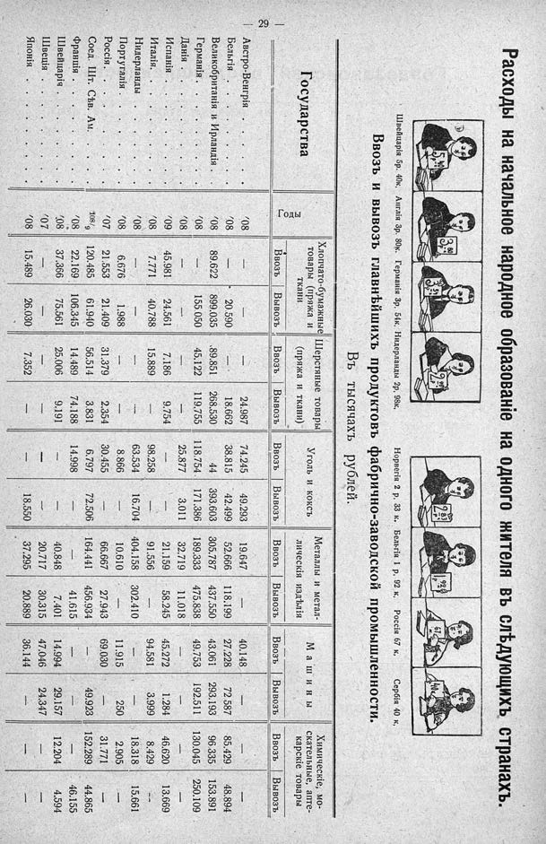

Лист источника 75
Скан

Распознанный текст
Расходы на начальное образованіе на одного жителя въ слѣдующихъ странахъ.
5 40
3 80
3 54
2 98
2 33
1 92
67
40
Швейцарія 5р. 40к. Англія 3р. 80к. Германія 3р. 54к. Нидерланды 2р. 98к. Норвегія 2 р. 33 к. Бельгія 1 р. 92 к. Россія 67 к. Сербія 40 к.
Ввозъ и вывозъ главнѣйшихъ продуктовъ фабрично-заводской промышленности.
Въ тысячахъ рублей.
Государства Годы Хлопчато-бумажные товары (пряжа и ткани) Шерстяные товары (пряжа и ткани) Уголь и коксъ Металлы и метал-лическія издѣлія Машины Химическіе, мо-скательные, апте-карскіе товары
Ввозъ Вывозъ Ввозъ Вывозъ Ввозъ Вывозъ Ввозъ Вывозъ Ввозъ Вывозъ Ввозъ Вывозъ
Австро-Венгрія . . . . . . . . . . . . . '08 — — — 24.987 74.245 49.293 19.647 — 40.148 — — —
Бельгія . . . . . . . . . . . . . . . . . '08 — 20.590 — 18.662 38.815 42.499 52.666 118.199 27.228 72 587 85.429 48.894
Великобританія и Ирландія . . . . . '08 89.622 899.035 89.851 268.530 44 393.603 305.787 437.550 43.061 293.193 96.335 153.891
Германія . . . . . . . . . . . . . . . . '08 — 155.050 45.122 119.755 118.754. 171.386 189.333 475.838 49.753 192.511 130.045 250.109
Данія . . . . . . . . . . . . . . . . . . '08 — — — — 25.877 3.011 32.719 11.018 — — — —
Испанія . . . . . . . . . . . . . . . . '09 45.981 24.561 7.186 9.754 98.258 — 21.159 58.245 45.272 1.284 46.620 13.669
Италія. . . . . . . . . . . . . . . . . '08 7.771 40.788 15.889 — 63.534 16.704 404.158 302.410 94.581 3.999 8.429 —
Нидерланды . . . . . . . . . . . . . '08 — — — — 8.866 — 10.610 — 11.915 250 18.318 15.661
Португалія . . . . . . . . . . . . . . '08 6.676 1.988 — — 30.455 — 66.667 27.943 69.030 — 2.905 —
Россія. . . . . . . . . . . . . . . . . . '07 21.553 21.409 31.379 2.354 6.797 72.506 164.441 456.934 — 49.923 31.771 —
Соед. Шт. Сѣв. Ам. . . . . . . . . . 108/9 120.485 61.940 56.514 3.831 14.998 — — 41.615 — — 152.289 44.865
Франція . . . . . . . . . . . . . . . . '08 22.169 106.345 14.489 74.188 — — 40.848 7.401 14.994 29.157 — 46.155
Швейцарія . . . . . . . . . . . . . . . '08 37.366 75.561 25.006 9.191 — — 20.717 30.315 47.046 24.347 12.204 4.594
Швеція . . . . . . . . . . . . . . . . . '07 — — — — — — 37.295 20.889 36.144 — — —
Японія . . . . . . . . . . . . . . . . . '08 15.489 26.030 7.352 — 18.550 — — — — — — —